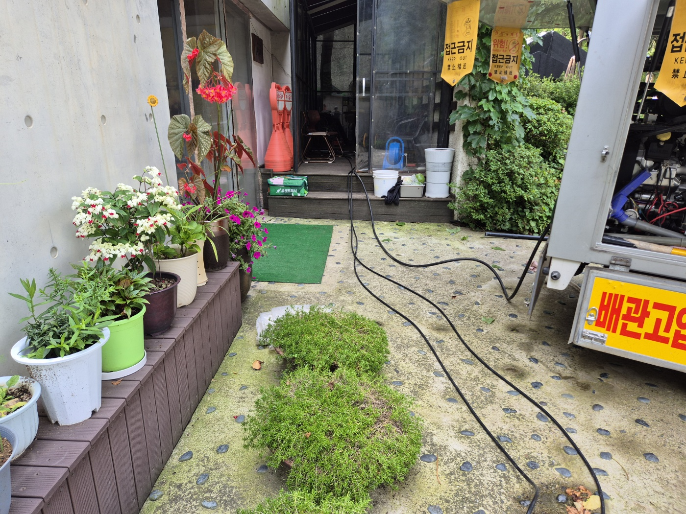
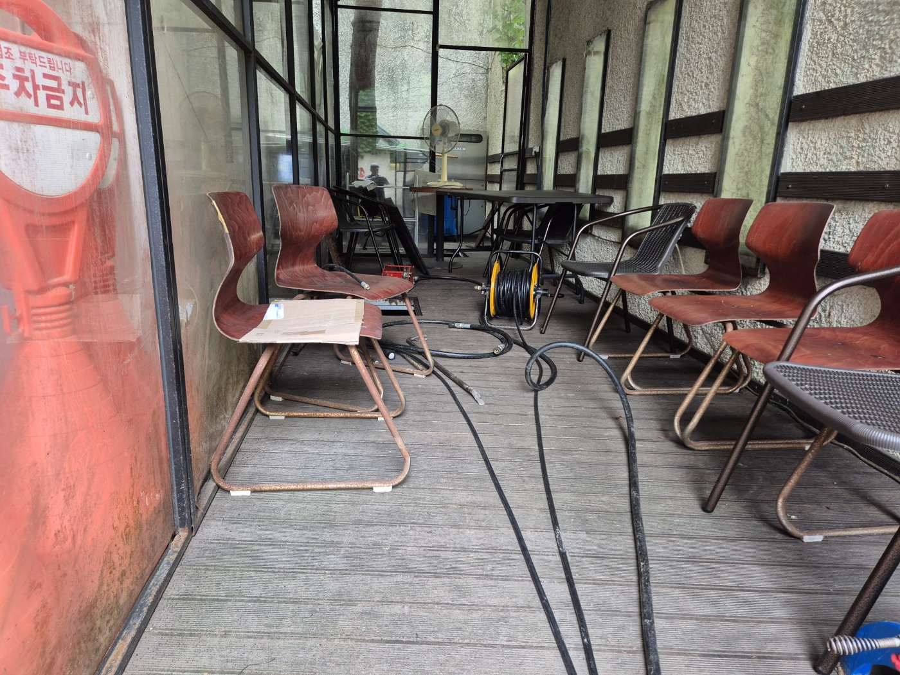
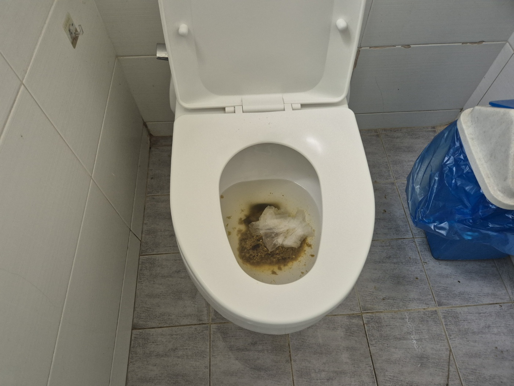
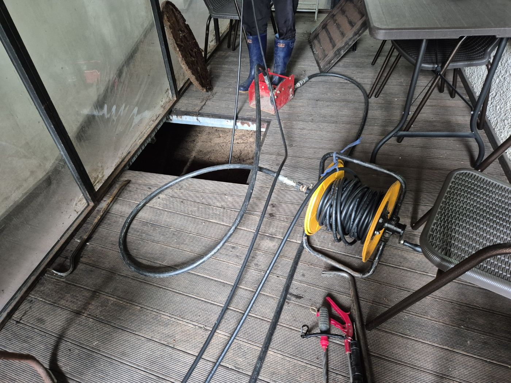
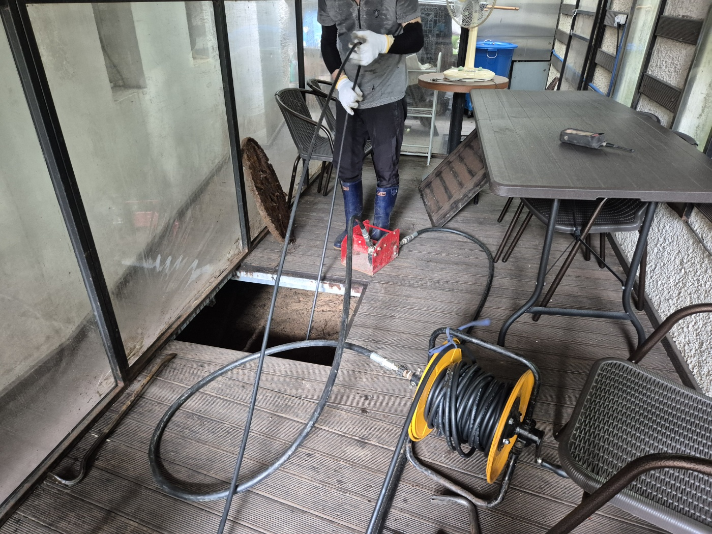
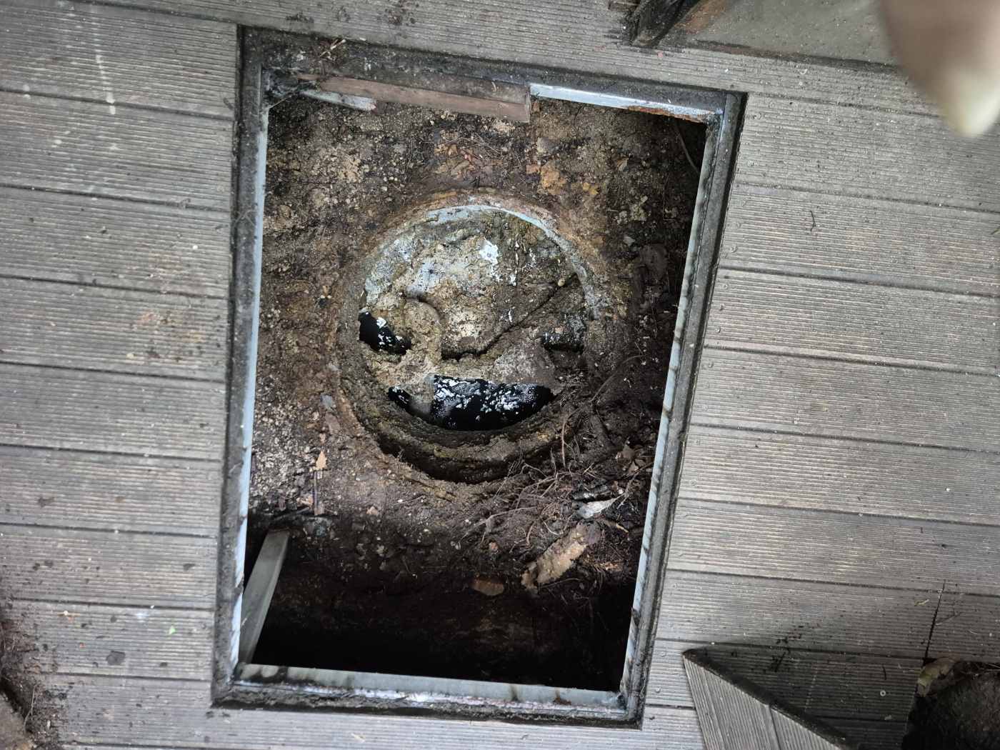
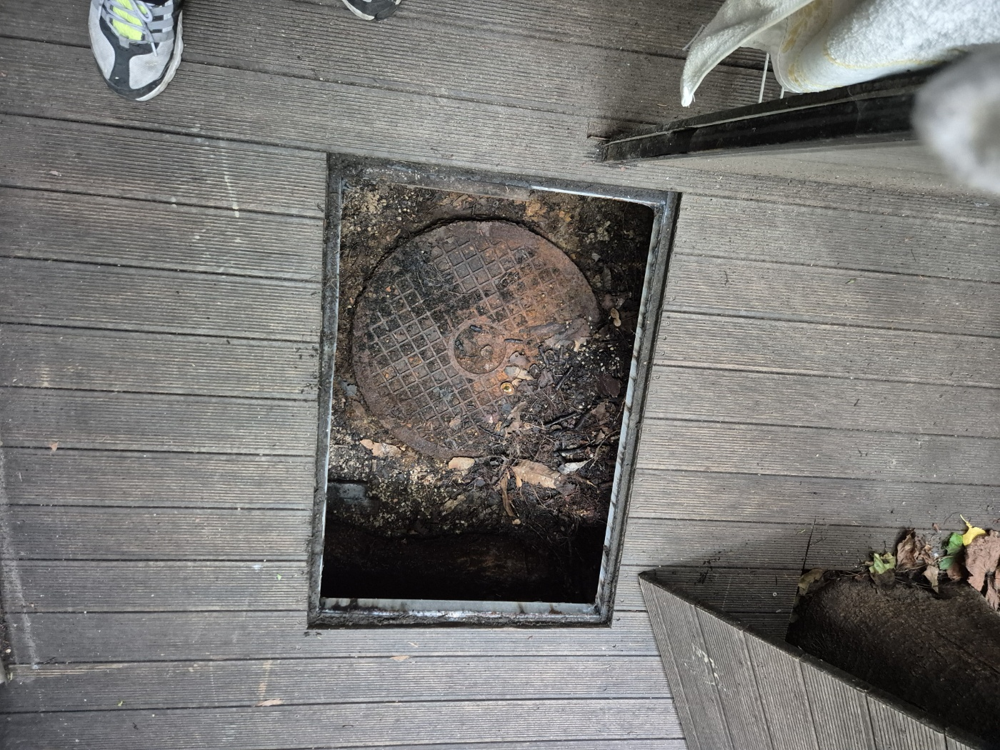
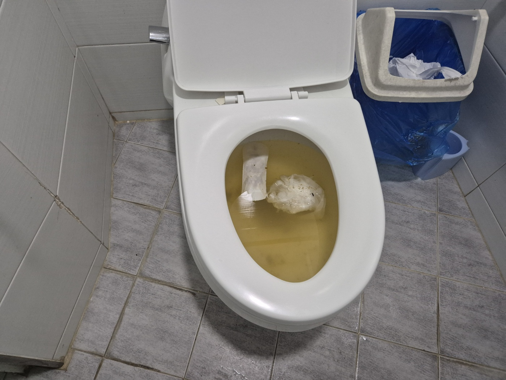
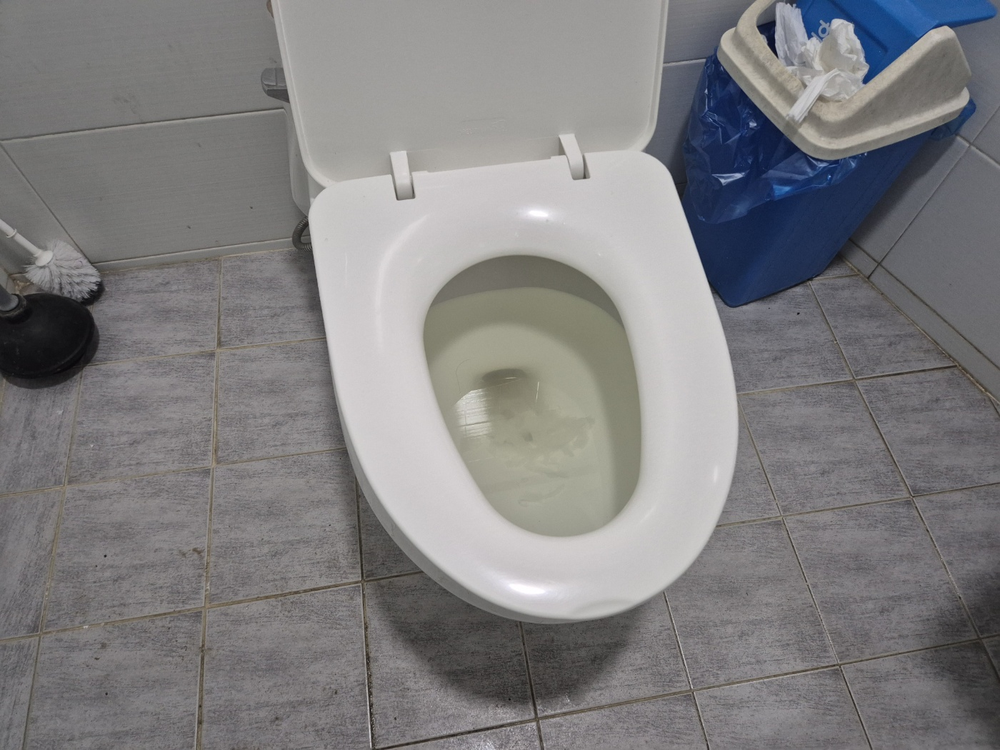
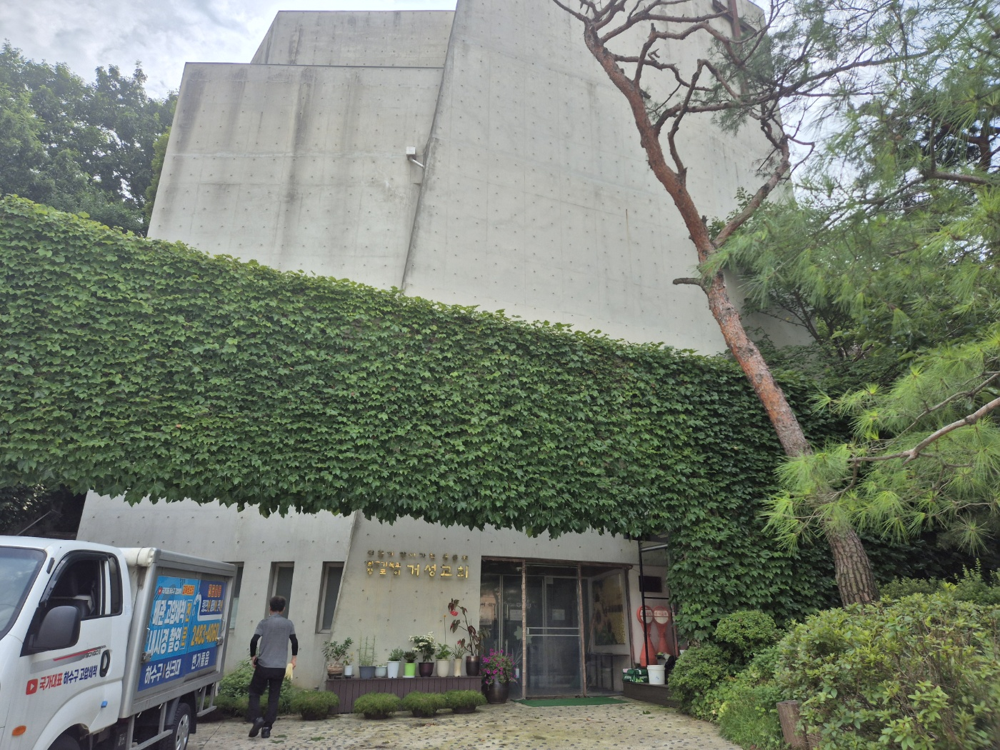

안녕하세요.. 고고고 설비입니다.. 오늘 현장은 평택시 세교동에 있는 교회 화장실 변기막힘, 오수관막힘 현장이었어요.
1. 현장 도착과 첫인상
본당 뒤편, 유리로 둘러싸인 데크 통로 쪽으로 안내를 받았는데.. 화분이랑 테이블, 의자들이 다닥다닥 붙어있어서 장비 들고 들어가기가 생각보다 좁고 힘들더라고요. 통로 안쪽 화장실 변기 물이 잘 안 내려간다고 하셨습니다.

2. 문제 확인
화장실에 들어가서 변기부터 확인했는데, 휴지랑 오물이 그대로 엉겨 붙어서 갈색으로 변색돼 있더라고요.. 눈으로만 봐도 오수관 쪽까지 막힌 게 딱 보였습니다.

3. 작업 준비
차량에 있는 고압세척기에서 호스를 풀어 데크 통로를 지나 화장실 쪽까지 끌어왔어요.. 통로가 좁아서 의자며 테이블 다리에 걸리지 않게 정리해가며 진행했고, 작업 구간엔 접근금지 표지를 세워뒀습니다.


4. 오수관 점검구 개방
데크 나무판 한쪽을 들어내니 그 밑에 녹슬고 흙먼지가 잔뜩 쌓인 원형 점검구 뚜껑이 나왔어요. 랜턴으로 비춰가며 안쪽 상태부터 확인했는데, 오랫동안 열지 않았던 듯 낙엽이랑 흙, 잔뿌리 같은 이물질이 뚜껑 주변에 겹겹이 쌓여있더라고요..

바로 옆에 있던 또 다른 점검구도 함께 열어서 오수관 상태를 확인했습니다.


5. 고압세척 작업 진행
열어둔 점검구 쪽으로 고압호스를 밀어 넣고 압력을 올려가며 안쪽에 쌓인 슬러지랑 이물질을 조금씩 밀어내는 작업을 반복했어요.. 오래 쌓인 상태라 한 번에 뻥 뚫리진 않아서, 구간을 나눠서 여러 번 왕복하며 세척을 진행했습니다.
6. 최종 테스트
작업 마무리하고 화장실로 돌아가서 변기 물을 여러 차례 내려봤는데, 처음엔 뿌옇게 이물질이 올라오기도 했지만.. 반복해서 통수 확인을 하고 나니 맑은 물로 시원하게 잘 빠지더라고요!!


7. 마무리
점검구 뚜껑을 다시 덮고 데크 나무판도 원래대로 맞춰놓고 나왔습니다. 오래된 배관일수록 한 번 막히면 재발이 쉬워서, 정기적으로 관리해주시는 게 훨씬 낫다고 말씀드리고 현장을 마무리했어요.

고고고 설비는 주택, 아파트, 원룸, 상가, 공장의 생활 하수 오수 배관을 관리해 주는 업체입니다. 고고고 설비에 전화 주시면 친절상담 정확한 진단 확실한 해결로 보답해 드리겠습니다!!